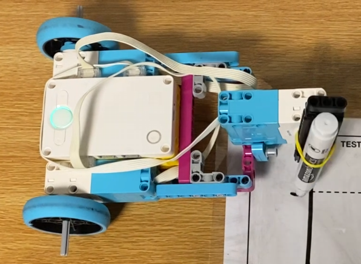

Project Portfolio
Project 7: Draw a Square

Building off of my Project 6: Simple Car, I attached a drawing tool to the robot so it could trace a precise square on the back of a placemat or another sheet of paper. The goal was to design and program a robot that could draw a nearly perfect square while keeping the path accurately placed within the required outer boundary and outside the inner square.
The challenge was to use the Simple Car base and improve the motion control enough to create a clean, repeatable square pattern. This required careful attention to turning angles, wheel movement, and the placement of the marker so the drawing stayed in the right area. To keep the marker from dragging during turns, I used a motor to lift it up.

The video shows a class run first, followed by a home run of my project.
| Category | Self-evaluation |
|---|---|
| Performance | Drawn square stays on placemat. Drawn square stays inside solid big square. |
| Finished where started | Within 4 cm. |
| Looks like a square | Fairly decent. All angles are about +/- 20 degrees from 90 degrees. |
Python code
# Setup: left drive motor on E, right drive motor on F, marker motor on A.
from hub import port, button
import runloop
import motor
import motor_pair
# Motor rotations for the driving distances.
TWO_INCHES_DEGREES = 175
THREE_INCHES_DEGREES = 230
EIGHT_INCHES_DEGREES = 388
# Turn amounts for the three turns.
FIRST_TURN_DEGREES = 420
SECOND_TURN_DEGREES = 425
THIRD_TURN_DEGREES = 430
# Motor speeds, in degrees per second.
DRIVE_SPEED = 250
TURN_SPEED = 180
MARKER_SPEED = 200
# Marker movement from its down position.
MARKER_LIFT_DEGREES = 30
async def main():
# Wait until the right hub button is pressed.
while button.pressed(button.RIGHT) == 0:
await runloop.sleep_ms(10)
# Pair the drive motors for straight movements.
motor_pair.pair(motor_pair.PAIR_1, port.E, port.F)
# Repeat the sequence three times, using a different angle for each turn.
for section in range(3):
# Drive forward 2 inches with the marker down.
await motor_pair.move_for_degrees(
motor_pair.PAIR_1, TWO_INCHES_DEGREES, 0,
velocity=DRIVE_SPEED
)
# Lift the marker, then move forward 3 inches.
await motor.run_for_degrees(
port.A, MARKER_LIFT_DEGREES, MARKER_SPEED
)
await motor_pair.move_for_degrees(
motor_pair.PAIR_1, THREE_INCHES_DEGREES, 0,
velocity=DRIVE_SPEED
)
# Choose the turn angle for this turn.
if section == 0:
turn_degrees = FIRST_TURN_DEGREES
elif section == 1:
turn_degrees = SECOND_TURN_DEGREES
else:
turn_degrees = THIRD_TURN_DEGREES
# Turn right using the left wheel; the right wheel stays stopped.
motor.stop(port.F)
await motor.run_for_degrees(
port.E, -turn_degrees, TURN_SPEED
)
# Reverse 8 inches while the marker is lifted.
await motor_pair.move_for_degrees(
motor_pair.PAIR_1, -EIGHT_INCHES_DEGREES, 0,
velocity=DRIVE_SPEED
)
# Lower the marker for the next section.
await motor.run_for_degrees(
port.A, -MARKER_LIFT_DEGREES, MARKER_SPEED
)
# Drive the final 2 inches with the marker down.
await motor_pair.move_for_degrees(
motor_pair.PAIR_1, TWO_INCHES_DEGREES, 0,
velocity=DRIVE_SPEED
)
# Unpair the drive motors when the sequence is finished.
motor_pair.unpair(motor_pair.PAIR_1)
runloop.run(main())